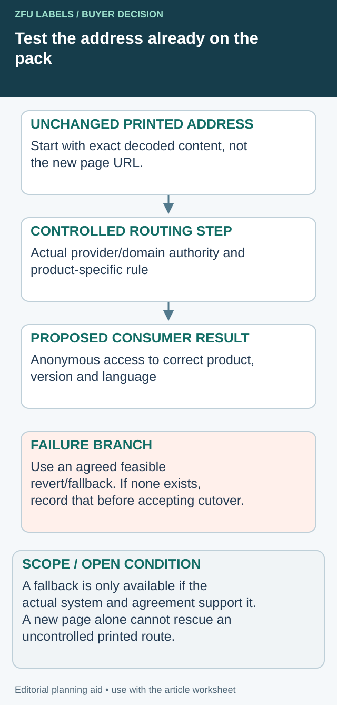

The QR code works on the proof, but it points through a campaign account controlled by an agency or a subscription service. When that arrangement changes, the printed labels remain in warehouses and shops while the destination becomes difficult to manage.
Decide who controls the encoded address, redirection and content before printing. A successful scan establishes one moment of access; it does not establish long-term ownership, continuity or the right destination for every product version.

Test the old printed address against the proposed new service
The migration acceptance test starts with data decoded from the approved printed symbol. Opening the proposed new product page directly skips the dependency that may fail. Preserve the printed address, the rule it reaches and the expected product/language content as separate items in the handover.


| Checkpoint | Observation to retain | Decision before cutover |
|---|---|---|
| Printed route | Exact decoded content and artwork/product revision | Which existing stock depends on this address? |
| Proposed handling | Provider/domain and authorized routing change | Can the business actually control this step? |
| Consumer result | Anonymous access to intended product and language | Does the unchanged route reach the correct content? |
| Exceptions | Retired product, old campaign and applicable routing cases | What approved content should each still show? |
| Recovery | Actual revert/fallback mechanism, owner and limit | Is rollback feasible under the provider's real terms? |
Rehearse the failure branch as well as the success branch
For an illustrative packaging range, an old address might redirect to a new product system while the product identifier remains unchanged. Test that entire path with the technical owner, including any intentionally supported language or version rules. Record what was tested; one successful office-phone result does not establish all conditional routes.
If the old third-party address cannot be controlled after termination, a technically sound new page does not solve the printed-stock dependency. Ask the provider what continuation, export or migration options actually exist. The business may need a different service arrangement or a stock decision. Do not promise that a printed symbol itself can be edited remotely.
For a GS1 implementation, use the applicable GS1 resolver standard with the implementation owner. Its routing framework does not turn an ordinary marketing short link into a conformant resolver, nor does it confer control of a third party's domain.
Before cutover, agree a specific success condition, who watches the existing routes and what would trigger the available recovery action. Preserve the previous routing configuration where the system and agreement permit it. If reversal is impossible, state that before accepting the migration, rather than adding a fictitious rollback step to the plan.
The asset is an editorial continuity checklist, not a live service test or uptime guarantee. It helps purchasing compare provider handover commitments while keeping code-print quality, data accuracy and destination availability as separate approval questions.
Identify the address inside the code
Ask the designer or service provider to supply the exact decoded content. Record whether it is an ordinary web address, a GS1 Digital Link URI or another data format. Do not infer the content from the page that happens to open after scanning.
Separate the printed address from any later redirect and final content page. Those can be controlled by different parties. The general barcode and QR guide addresses physical code planning; this article addresses the service and ownership chain behind the printed symbol.
Keep test and production addresses distinct. A proof that opens a staging page should not enter a final print file until the responsible owner confirms the production route and its availability.
Choose a continuity model
A brand-controlled domain can give the business an identified point of control, provided registration, hosting and access are maintained. A third-party service can provide useful management features, but its contract and account arrangements need to be understood. Neither choice removes the need for an owner and a recovery route.
For GS1 Digital Link implementations, GS1's redirection guidance separates the identifying URI from the location of related information. Read the applicable standard and implementation advice with your provider; do not describe every shortened marketing URL as a conformant GS1 resolver.
Ask what happens when a subscription ends, an agency relationship changes or the destination site is rebuilt. The answer should identify actual rights and technical actions rather than promise that a dynamic QR code lasts forever.
Build a destination ownership record
| Field | Decision before printing |
|---|---|
| Encoded content | Exact address/data and approved artwork revision |
| Domain control | Registrant or authorized business owner and renewal responsibility |
| Service account | Business access, administrators and recovery route |
| Redirection | Provider, rules and change authorization |
| Final content | Product/version coverage and content owner |
| Continuity | Export, migration or fallback conditions in the actual agreement |
| Monitoring | Who checks access and responds to failure |
| Retirement | How old printed stock remains supported or is handled |
The record is an editorial handoff asset, not a guarantee that a provider supports every listed function. Ask for explicit confirmation of the features and terms the business requires.
Test the route the consumer will use
Decode the approved symbol and check the complete path to the intended content. Confirm the product, language and version shown. Use representative devices and conditions appropriate to the project, while keeping physical symbol verification separate where required.
Avoid approving a QR destination only from a screenshot supplied by the agency. Access the production route directly and record the date, result and owner. A page reachable while logged into a management account may not be reachable by a consumer.
If the destination uses device, region or campaign rules, ask which behavior is intended and how exceptions are tested. Do not assume that the link seen on one office phone is the universal result.
Keep content changes from breaking product meaning
A promotion may end while the package remains in circulation. Decide what the code should show afterward and who can authorize the change. A permanent product-information route and a temporary campaign can have different lifecycle needs.
Do not redirect an old product identifier to an unrelated new item merely to avoid an empty page. The content owner should decide how the earlier product remains accurately represented. Where required product information is involved, the responsible regulatory or market owner must review the applicable requirements.
The serialized-label guide addresses individual data records. A destination-control decision can apply to a shared product code or a serialized system, but the data and security requirements differ.
Review service changes before changing artwork
If the brand retains control of the printed route and can change its destination appropriately, a website migration may not require new label artwork. If a third-party address cannot be transferred, the physical inventory may become part of the migration problem.
Ask the provider and your technical owner to confirm the actual options. Do not promise that an already printed code can be edited; the printed data stays the same. What may change is the service behavior behind an address, where the relevant system and rights allow it.
The artwork handoff guide helps ensure the approved encoded content is the one in the production file. Keep that exact string with the approval record instead of relying on a filename such as final QR.
Make a handover test part of provider selection
Ask the proposed provider to describe the ordinary handover procedure and demonstrate any export or destination-change function the agreement includes. Keep the business administrator able to locate the encoded-address record without depending on a departing employee. Where a function is unavailable, record the limitation and its effect on existing printed inventory before selecting the service.
Put a named owner beside the printed code
Before release, confirm who maintains the domain, account, content and monitoring. Store access through the business's approved credential process rather than in the public artwork notes. Review the route when the provider, product or content system changes.
Resolve the specific label handoff
Include exact encoded routes, product/version map, provider control and proposed cutover/fallback arrangements.
Prepare the label specification inquiry. The form opens an email draft for your review; attachments go through the listed email or WhatsApp route. Actual supply scope, pricing, samples and timing need project confirmation.
Related decisions: Label Artwork Handoff: Identify the Production File and Its Dependencies; Label Lot Traceability: Link the Roll to the Finished Packing Run; Multilingual Label Artwork: Approve the Translation Before the Layout